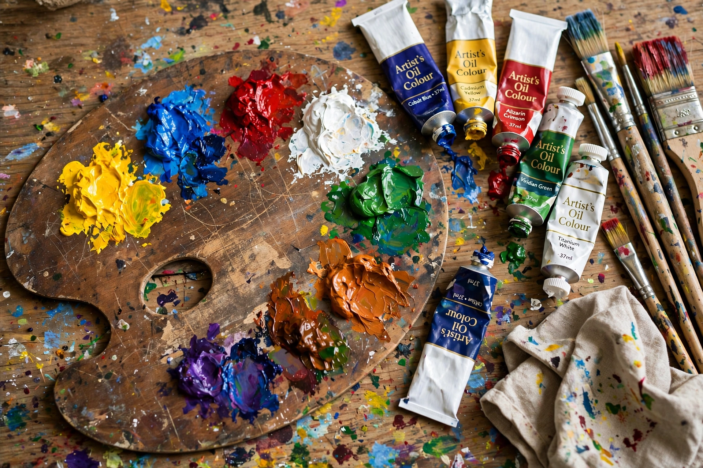

Oil paint is a type of slow-drying paint consisting of pigment particles suspended in a drying oil, commonly linseed oil. Because it dries slowly, it can be blended on the support and reworked, qualities that made it the dominant medium of Western easel painting from the 15th century onward.
Oil-based paints were used as early as the 7th century CE in Afghanistan, in cave paintings at Bamiyan. In Europe the medium was described by Theophilus Presbyter in the 12th century, but its artistic potential was fully realized in early-15th-century Flanders, where Jan van Eyck and other Early Netherlandish painters exploited thin translucent glazes over underdrawing to achieve luminous detail. The technique spread to Italy later that century, displacing tempera, and was standard practice for artists from Leonardo and Titian to the Impressionists. The invention of the collapsible metal paint tube in 1841 enabled outdoor (plein air) painting.
Drying oils harden by oxidation and polymerization rather than evaporation, so oil paint remains workable for days. Painters adjust handling with solvents such as turpentine and mediums of oil and resin. The traditional rule "fat over lean" — each layer more oil-rich than the one below — prevents cracking. Linseed, walnut, safflower, and poppy oils each impart different drying times and yellowing tendencies.
See also: Oil painting, Tempera, Linseed oil, Pigment.